本文是学习ali云的云原生课程的记录，目的是对基础概念的理解
原课程
K8S核心概念
架构
K8S的架构是CS架构：
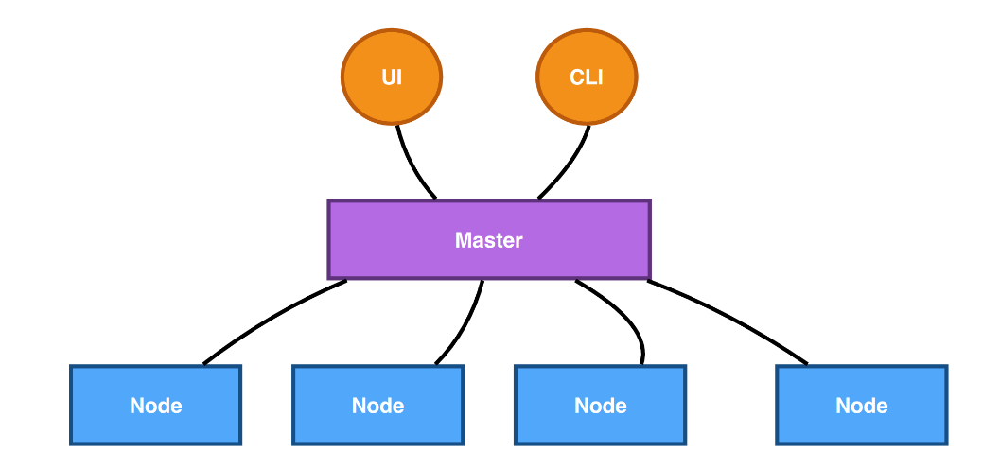master的结构如下：
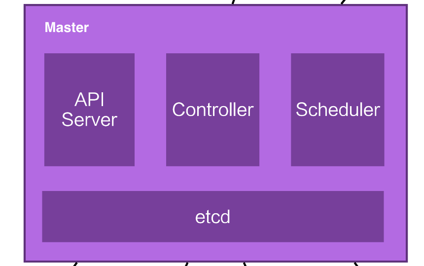- Api Server不仅是外部访问k8s的入口，也是k8s各组件内部的枢纽
- Scheduler用于调度deployment的pod在哪个node节点运行
- Controller用于控制状态，做一些检测，确定集群运行正常，当有节点宕机，将其上的pod运行到其他节点上。
- etcd是一个分布式数据库
node的结构如下：
- pod翻译是豆荚，是k8s对容器的一种封装
- kubelet，是node下的控制，接收自master的命令，运行pod
- Container Runtime，容器运行环境，是容器实际运行的地方
- storage plugin，存储插件，是云计算厂商实现的存储接口
- network plugin，网络插件，同样也是云计算厂商实现
- kube-proxy，是位置k8s内部service集群的代理
示例
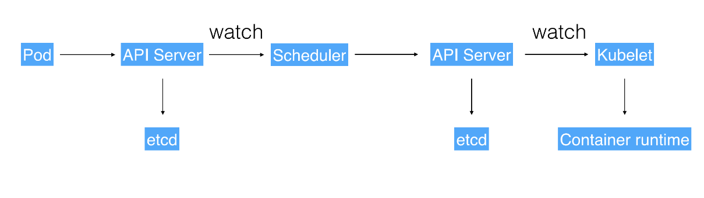这个例子是有一个pod要运行，先与api server进行交互，api server进行存储，然后交给scheduler进行调度，scheduler根据目前集群的状态，计算该pod运行的位置，并经过api server进行存储，下发给node上的kubelet，kubelet再在container Runtime下运行起相应的pod（容器）
核心概念
Pod
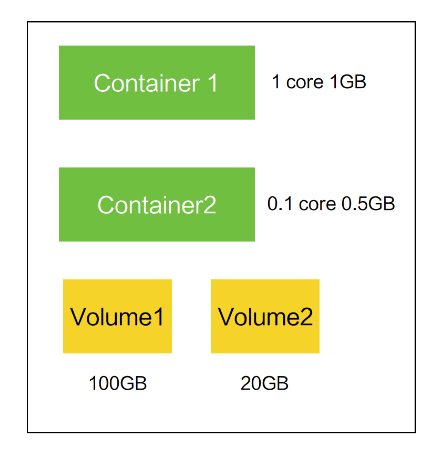
- k8s最小的调度及资源单元
- 由一个或多个容器组成
- 为这些容器，提供共享的资源（网络、进程空间）
Volume
- 声明再Pod中的容器可访问的文件目录
- 支持多种后端存储的抽象：本地存储、分布式存储、云存储
Deployment
- 部署的概念，定义一组pod的副本数、版本等。意思是告诉k8s，我想要这种状态。
- k8s通过scheduler调度pod运行的节点
- 通过Controller维持想要的这种状态，包括自愈，版本控制
service
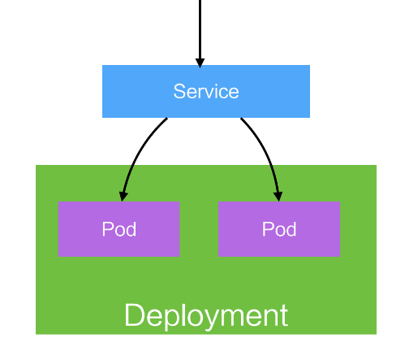
既然服务可以运行多个容器，这些容器对外提供服务就需要用稳定的访问地址，service就是为多个pod而建立稳定的虚拟ip。
Namespaces
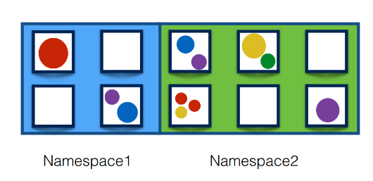
集群内部的逻辑隔离机制，每个资源都属于一个Namespace
上述的概念都可认为是一种资源，namesapce为一套K8S运行多个产品做好了铺垫
API
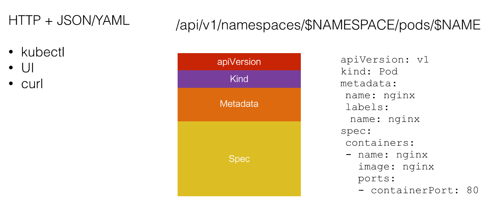
Pod
Pod概念
容器
容器是一个试图被隔离、资源受限的进程（linux线程）
容器里PID = 1的进程就是应用本身
容器是单进程模型k8s
k8s是对容器的编排，等价于操作系统pod
pod中的容器共享一些资源，可以任务是进程组(linux进程)两个docker应该运行在以pod上时，应该有超亲密关系：
- 会发生直接的文件操作
- 通过localhost进行本地同喜
- 非常频繁的rpc调用
实现机制
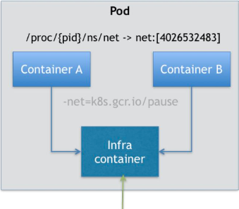
通过Infra Container的方式来共享一个Network Namespace，将网络放到Infa Contanier中，也使得一个pod只有一个ip地址，整个pod的生命中期与infra container一致。
使用方式
InitContainer
pod中的InitContainer按用户定义的顺序依次启动，其他容器并发启动，并且InitContainer运行完成后自动退出。
用InitContainer来执行一些配置、预先准备资源的任务。SideCar
用边车来执行一些辅助且通用的工作，如：日志收集
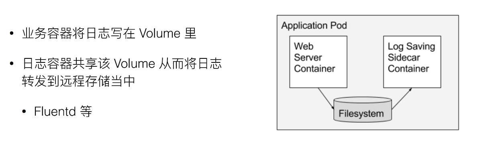应用监控
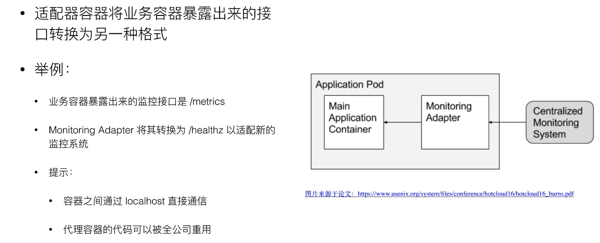
控制的核心
资源对象
- spec：期望的状态
- status: 观测到的状态
metadata
Lables
key-value形式的标签，用于筛选资源，
Selector: Tie=front
Selector: Env in (test, gray)Tie notin (front, back)Annotations
存储资源的非标识性信息，可以包含特殊字符OwnerReference
资源创建者对象，如pod一般的所有者是replicas
控制
控制循环
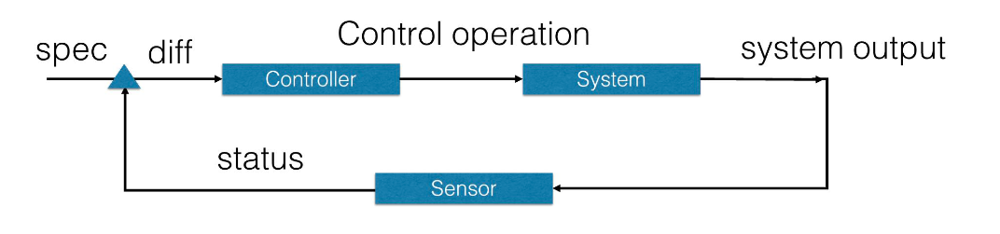
主要是2部分：sensor、controller，不断使status趋近specsensor部分
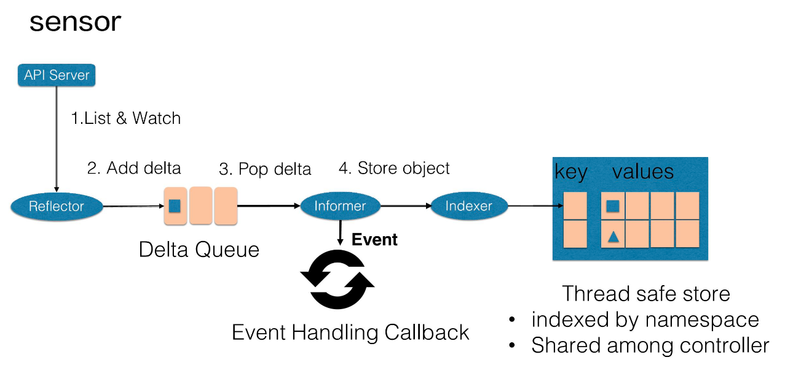
通过不断的list & watch来获取变化，通过informer通知给controller部分来处理controller部分
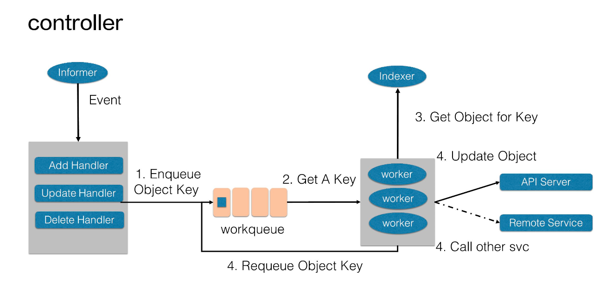
hander发出指令，woker进行操作。示例：
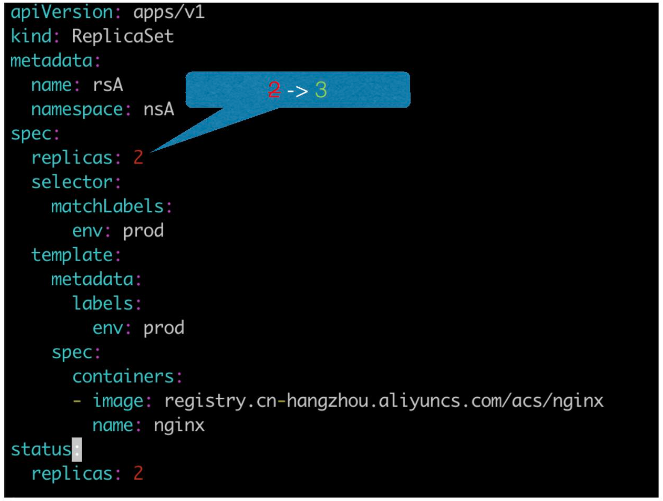
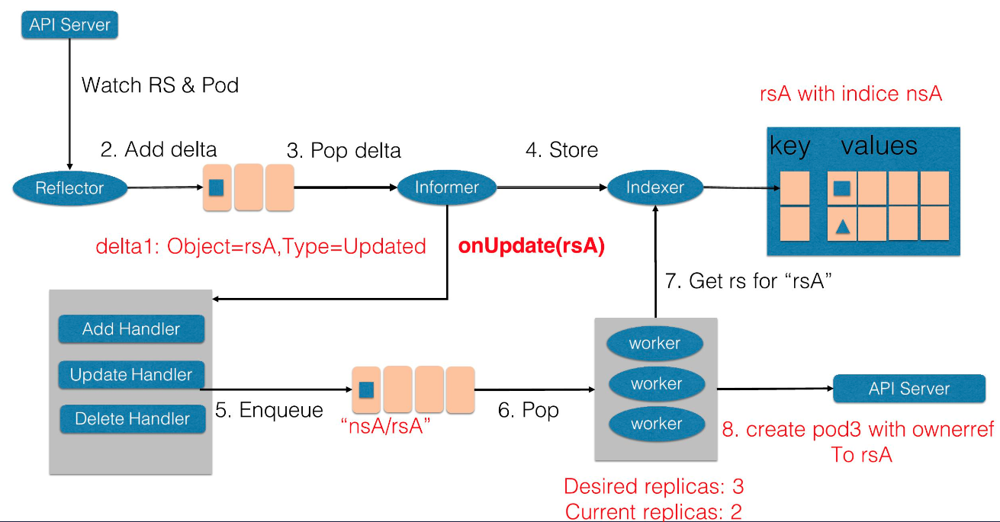
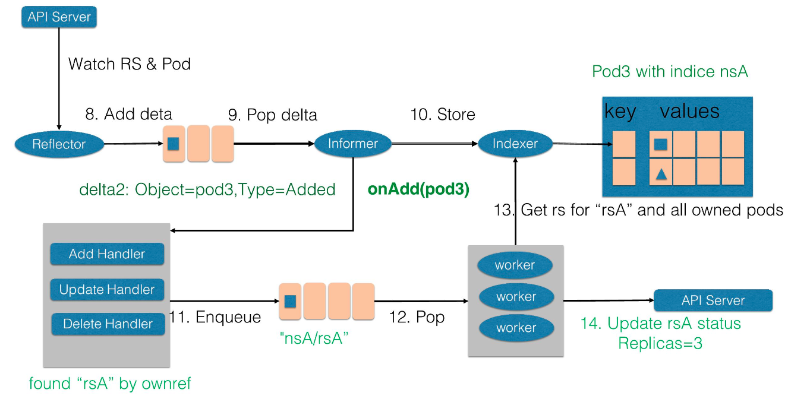
deployment
本节应该算是运维重点
用处
定义一组pod的spec数量，controller会维持status与spec一致
配置pod的发布方式，controller会暗中给定策略更新pod，保证发布过程可用
如有发布问题，支持一键回滚基础
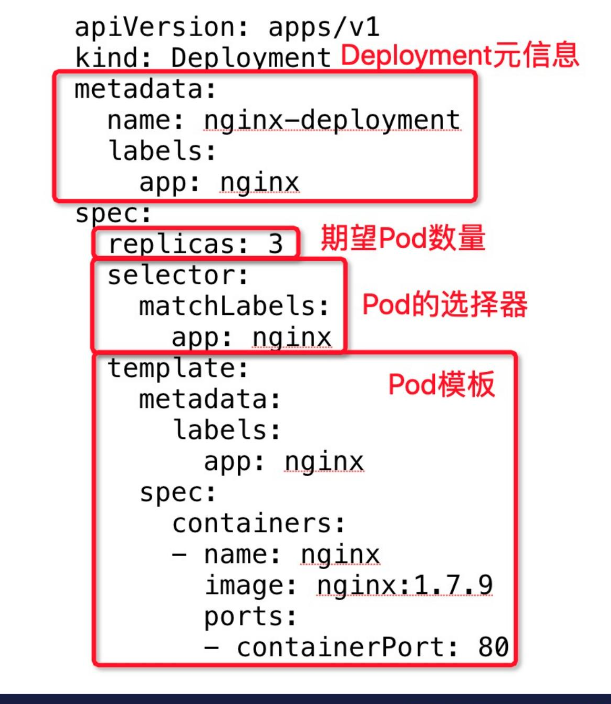
replicas: 期望的数量；
template: pod模板deployment只负责管理不同版本的replicaSet，由ReplicaSet管理Pod副本数。每个ReplicaSet对应 deployment的一个版本，每个ReplicaSet下的pod都是相同的版本
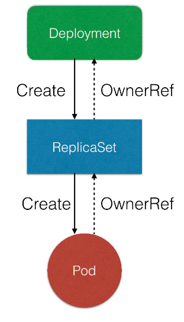发布
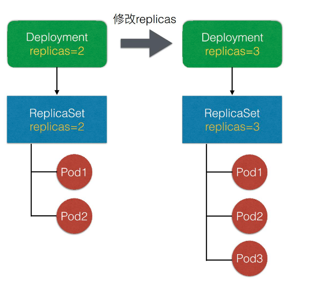扩容
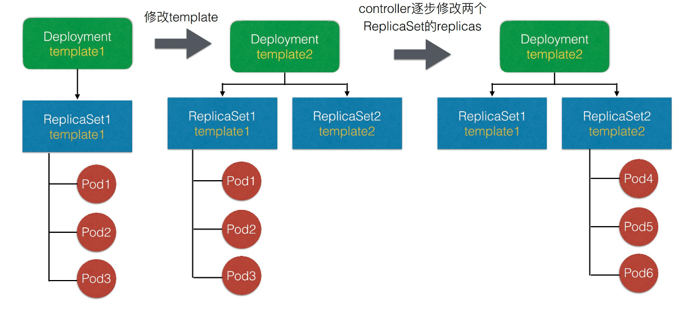快速回滚
kubectl rollout undo deployment/nginx-deployment // 回滚到上一版本kebectl rollout undo deployment.v1.apps/nginx-deployment –to-revision=2 // 回滚到固定版本
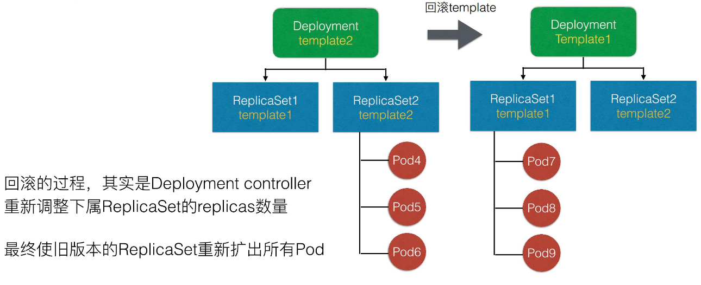
控制字段
- revisionHistroyLimit:保留历史resion(ReplicaSet)的数量，默认10
- paused: 标志Deployment只做数量维持，不做新的发布
- progressDeadlineSeconds: 判断deloyment失败的最大时间
- MaxUnavailable: 发布过程中最多的pod不可用数目
- MaxSurge: 发布过程中最多存在多少个Pod超过期望replicas数量
Job
普通job
Job可以看做是直接运行的任务进程，执行某种计算，完成之后就停止。
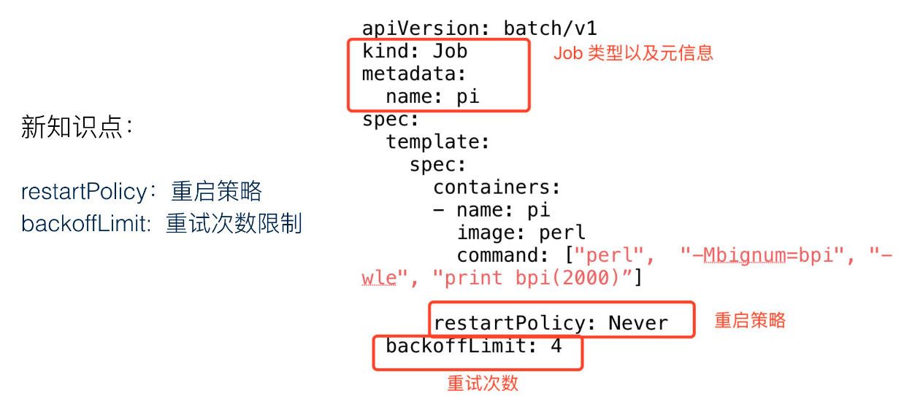
用pod执行一个计算pi的任务在spec中指明
- completions： 代表这个job执行的总次数
- parallelism: 代表并发的个数
kubectl get jobs
cronJob
定时运行的job，与linux的cron相似
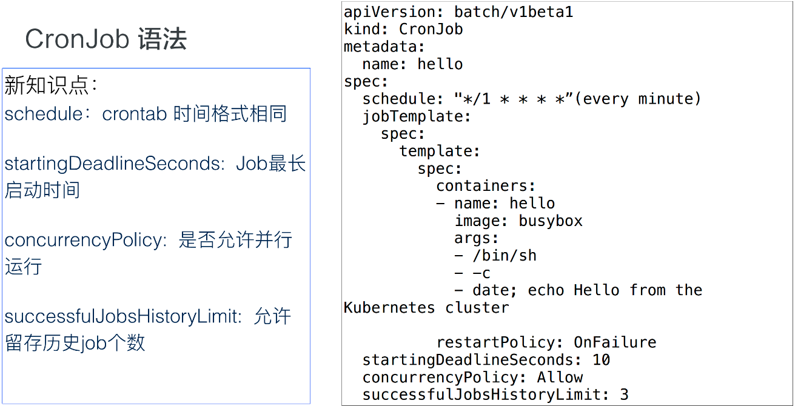
daemonSet
用处
如同守护进程类似，可以用来：- 保证集群每一个(或一些)节点都运行一组相同的Pod
- 跟踪集群节点状态，保证新加入的节点自动创建对应的pod
- 跟踪集群节点状态，保证移除的节点删除对应的pod
- 跟踪pod状态，保证每个节点pod处于运行状态
示例
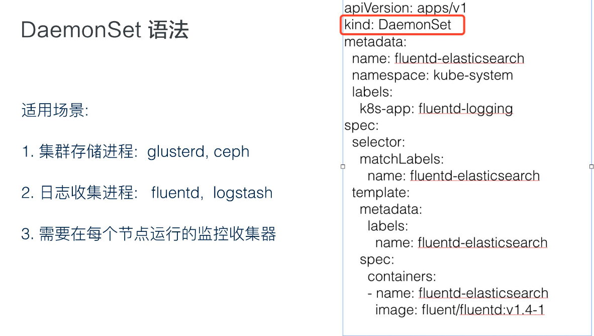